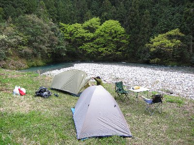
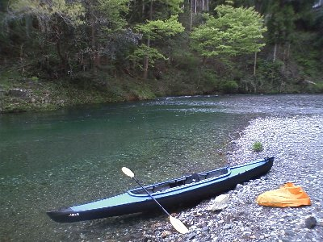
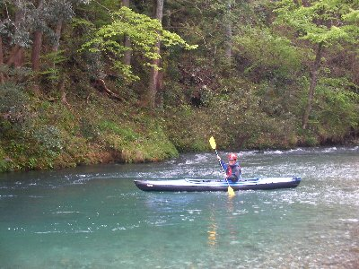
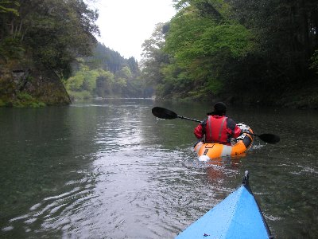

武儀川下り＆キャンプ | 2011年4月 |
|---|---|
| ゴールデンウイーク（以下ＧＷ）前半、せっかくの３連休だったので友人に声を掛けて、岐阜県の武儀川をカヤックで下りに行きました。 武儀川ってどこなの？ 友人から川の名前を聞いても、サッパリ場所が分からず、Googleで探してみました。岐阜駅から北上すること車で30分位の位置と分かりました。 カヤックでの川下り情報は、いくつか出てきて、今回はそれを参考に下ることにしました。 一日目 天気快晴。ＧＷ初日と言うこともあって、高速での渋滞を懸念し、早朝より出かけるが、皆考えることは同じらしく、途中何箇所も渋滞に遭遇。岐阜駅で友人と合流し、下見と本日のキャンプ地を探すべく武儀川に向かう。 一昨日激しい雨が降っていたので、水量とか濁りとか気になっていたのですが、道路から見る限りは清流そのもの。蒼というか碧というか、美しい色でゆらりと流れています。これなら行ける！ 一番の懸念ポイントで、途中にあるコンクリートの堰も下見。ここは５ｍ位の落差があり、そのままでは下れません。横に魚道がありまして、これが段々畑のようになっているので、ここをポーテージするとホームページ情報ですが、上から見ても凄い。あそこ歩けるのかな〜？ | |
 コンクリートの堰 手前が魚道（ちょっと見えないか） |  ココがキャンプ地だー！ 良いところでしょう〜 |
| そしてキャンプ地を探して武儀川を上っていくと、目当てのキャンプ場はやってない。夏しかやらないんだろうな。 仕方なく川沿いのロケーションが良いところを探していると、川から一段上がっていて、平らな草地の場所を発見。目の前に綺麗な川が見れて最高な場所です。買出し後、ここにテントを設営しました。 本日の夕食は、卵入り焼きそばと、焼肉＋ビール♪ 楽しい夜でした。 二日目 天気は曇り。朝食を食べ終わると、おじさんが声を掛けてきました。 「あんたら度胸有るな〜、ここ墓地やぞ」 「えっ！！！」 なんでも、私たちがキャンプ地とした場所は、昔の共同土葬場所で、今も多くの方が眠っているそうです。でも墓石とか無いんですよ？ 木の棒が立っている程度でしたし。（確かに、あの木の棒は何だろうとは思ったが） もちろん僕らはおじさんに謝りましたが、おじさんは 「そんなことは良いんだけどね、夜に挨拶に出てきやしなかったかと」 と快く許してくれました。ここにテントを張る人は多いようです。皆さんも気をつけましょう！ おじさんとは色々話をして、この川（神崎川）が日本で一番の清流だとも、上流に水が湧き出す綺麗な場所がある事も、荒らされたくなくてＰＲしない事も聞きました。 | |
 スタート地点の神崎川 |  上も下も緑です |
| ま、そんな感じの清流を川下りです。スタートは谷合と言う場所の神崎川。でも数十メートルで武儀川です。 まさに清流といった場所でスタートなのですが、スタート地点がザラ瀬でちょっと大変。艇が引っかかり横倒しになるかと思いました。ちなみに友人がエアー艇、私がフォールディングカヤックです。 新緑は始まったばかりで、まだまだ緑は多くないけれど、水がとっても綺麗。川幅も狭くなく、心地よく流れていきます。そう、漕がなくてもいいんです。 水面近くからだと光が反射して、湖面の碧色が見えにくいけど、艇の直ぐ下をのぞくと、川底がハッキリ見える透明度。いや〜綺麗だな〜 ところどころ瀬とうか、ザラ瀬があるものの大きな瀬はなく、順調にコンクリートの堰に到着。ここで上陸して終了するか、魚道を通ってさらにくだるかの分岐点。 下り始めて1時間。まだまだ物足りない。よし、行こう！ 魚道の始まりは狭いトンネルになっていて、その向こうは段々になっている。１艇を前後二人で引っ張り慎重に進む。水量が多いらしく、一瞬腹まで水に浸かるが今更引き返せない。パラパラと雨まで降り出した。 段々コンクリートは、水の中にコンクリート柱や壁があり、平らでありません。引っかかっているゴミも沢山あります。しかし、水しぶきで見えないから、足で探りながらのポーテージです。 30分掛って２艇を運んだら、激しい雨が降ってきました。ついでに雷。 こりゃやばいって、川の両側は崖で、ここから上の道路には行けません。仕方なくちょっとだけある河原に上陸し、木の枝下に隠れます。 | |
|  ここ、ホントに水が綺麗です |  ね、下の石まで見えるでしょう |
| ほどなく雷雨は収まり、また川旅復活です。この後も、瀬という瀬はなく、ゆるい川旅を続けられます。 友人のエアー艇がザラ瀬に引っかかり、立ち往生するという場面もありました。 艇の中に水が溜まりまくると言うので、艇をひっくり返して水を抜いたところ、艇底に大きな穴が開いていました。どこかで引っ掻けたのでしょう。応急修理する道具もないし、空気層がいくつかあるので、いきなり沈することはないから、そのまま下ります。 橋がいくつも見えだしたら、この川旅も終りです。今回は富永を終了地点としました。下見でチェックしておいた上陸地点に到着。今回の川旅終了です。時間にして3時間かからず。 いや〜色々な意味で良い川ですね。距離は短いけど楽しめます。川沿いをバスが走っているので、バスにて車をピックアップ。 冷えた体を温めるべく温泉につかって、長良川の河原にテントを張りました。 明日もカヤックやろうと思っていたのですが、予報は雨。残念ながら今回のカヤックはここで終了です。 川旅成功のお祝いに、今夜はすき焼きです。しかも黒毛和牛で。（スーパーに買出しに行ったら、牛の種類が少なく、たまには贅沢しようと思いまして） これまたビールとよく合いました♪ 武儀川良いですよ。でもコンクリートの堰は自己責任で。入り口に「立ち入り禁止」と書いてありますから。 | |
|  |  |
| 写真＆コメント by べっしー | |